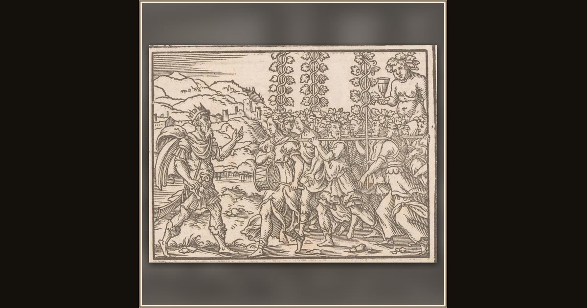

Pentheus in verzet tegen de cultus van Bacchus
Virgilius Solis (printmaker); Sigmund Feyerabend and others (publishers) · 1569 · rijksmuseum
A crowned man gestures toward a procession with a drum and vine-covered poles; Pentheus condemns the women honoring Dionysus with dances (220) Explore its place in Euripides's Plays, Bacchae, line 220.